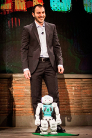
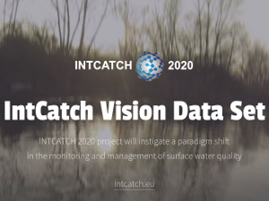
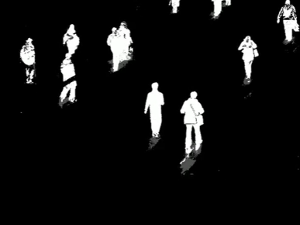

Faculty of Political Science and
Domenico D. Bloisi
Associate Professor
Faculty of Political Science and
Sociopsychological Dynamics
UNINT University (Italy)
|
|
| Email: domenico.bloisi@unint.eu |
About Me
I'm Associate Professor for Artificial Intelligence at the Faculty of Political Science and Sociopsychological Dynamics, UNINT University.
From December 2018 to June 2023 I was with the Department of Mathematics, Informatics, and Economics (DiMIE), University of Basilicata.
From February 2017 to November 2018, I was with the Department of Computer Science at University of Verona as fixed-term assistant professor, working on the HORIZON2020 project INTCATCH.
Previously, I was with the Department of Computer, Control, and Management Engineering at Sapienza University of Rome as fixed-term assistant professor.
My academic interests include intelligent surveillance, multi-sensor data fusion, image processing, robotic vision, and steganography.
I collaborate with the SPQR Robot Soccer Team at the Department of Computer, Control, and Management Engineering at Sapienza University of Rome.
Research
is the robot soccer team of the University of Basilicata. Established in 2019, it is focussed on developing software for NAO soccer robots participating in RoboCup competitions.
UNIBAS WOLVES team is twinned with SPQR Team at Sapienza University of Rome.
ORCA - ORal Cancer Annotated dataset
A collection of annotated images from the Cancer Genome Atlas (TCGA) dataset
Visit ORCA's web page

IntCatch Vision Data Set
A data base containing videos and sensor data coming from small lakes and rivers collected in the context of the HORIZON2020 project IntCatch.
Find out moreIntCatch AI
A collection of Artificial Intelligence algorithms for small and low-cost Autonomous Surface Vehicles (ASVs).
IMBS-MT
IMBS-MT is a background subtraction library designed for performing an accurate
foreground extraction in real-time on HD images.
IMBS-MT can deal with illumination changes, camera jitter, movements of small background elements,
and changes in the background geometry.

IMBS
IMBS (Independent Multimodal Background Subtraction) is a C++ library for background subtraction.